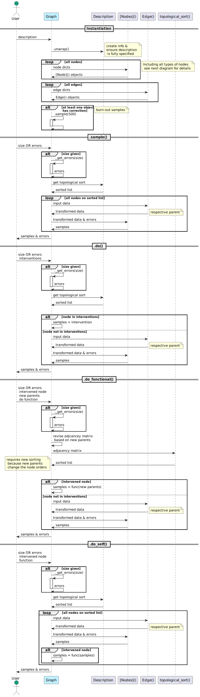

Diagrams
Main Classes and Functions
Description: Instantiation
Description: Parameter Randomization
Description: Randomize Connection
See also
Graph
PARCS Backend
Adjacency Matrix
Flowchart for pyparcs.api.utils.get_adj_matrix()
Augment Line
This function adds extra parents to the parameter equations in the process of pyparcs.Description.randomize_connection_to()
Description Parser
Main Function
Node Parser
To parse stochastic nodes, the distribution parameters are parsed according to the following:
Edge Parser
See also
Graph Objects Schemas

Topological Sort
Flowchart for pyparcs.api.utils.topological_sort()